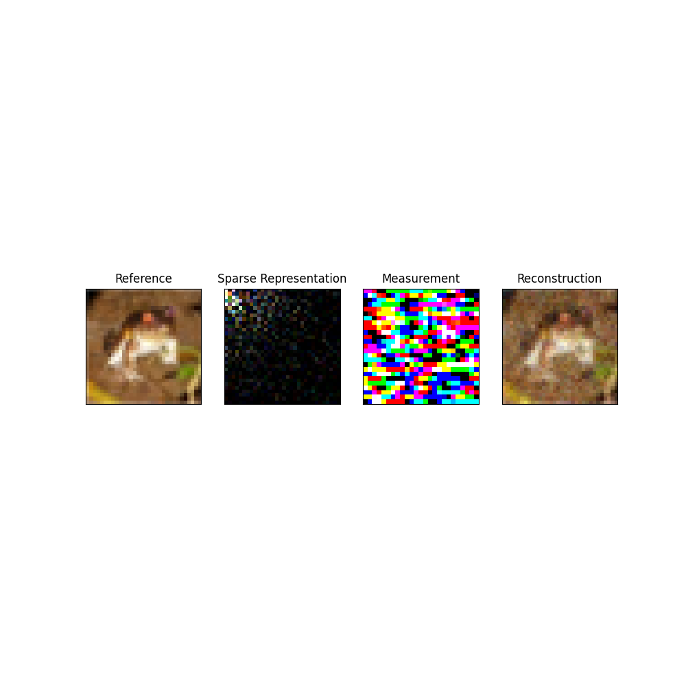

Note
Go to the end to download the full example code.
Demo Algorithms.¶
Select Working Directory and Device¶
import os
os.chdir(os.path.dirname(os.getcwd()))
print("Current Working Directory " , os.getcwd())
import sys
sys.path.append(os.path.join(os.getcwd()))
#General imports
import matplotlib.pyplot as plt
import torch
import os
# Set random seed for reproducibility
torch.manual_seed(0)
manual_device = "cpu"
# Check GPU support
print("GPU support: ", torch.cuda.is_available())
if manual_device:
device = manual_device
else:
device = torch.device("cuda:0" if torch.cuda.is_available() else "cpu")
Current Working Directory /home/runner/work/pycolibri/pycolibri
GPU support: False
Load dataset¶
from colibri.data.datasets import CustomDataset
name = 'cifar10'
path = '.'
batch_size = 1
builtin_dict = dict(train=True, download=True)
dataset = CustomDataset(name, path,
builtin_dict=builtin_dict,
transform_dict=None)
acquisition_name = 'spc' # ['spc', 'cassi']
Files already downloaded and verified
Visualize dataset¶
from torchvision.utils import make_grid
from colibri.recovery.terms.transforms import DCT2D
sample = dataset[0]['input']
sample = sample.unsqueeze(0).to(device)
Optics forward model
import math
from colibri.optics import SPC, SD_CASSI, DD_CASSI, C_CASSI
img_size = sample.shape[1:]
acquisition_config = dict(
input_shape = img_size,
)
if acquisition_name == 'spc':
n_measurements = 25**2
n_measurements_sqrt = int(math.sqrt(n_measurements))
acquisition_config['n_measurements'] = n_measurements
acquisition_model = {
'spc': SPC,
'sd_cassi': SD_CASSI,
'dd_cassi': DD_CASSI,
'c_cassi': C_CASSI
}[acquisition_name]
acquisition_model = acquisition_model(**acquisition_config)
y = acquisition_model(sample)
# Reconstruct image
from colibri.recovery.pnp import PnP_ADMM
from colibri.recovery.terms.prior import Sparsity
from colibri.recovery.terms.fidelity import L2
from colibri.recovery.terms.transforms import DCT2D
algo_params = {
'max_iters': 200,
'_lambda': 0.05,
'rho': 0.1,
'alpha': 1e-4,
}
fidelity = L2()
prior = Sparsity(basis='dct')
pnp = PnP_ADMM(acquisition_model, fidelity, prior, **algo_params)
x0 = acquisition_model.forward(y, type_calculation="backward")
x_hat = pnp(y, x0=x0, verbose=True)
basis = DCT2D()
theta = basis.forward(x_hat).detach()
print(x_hat.shape)
plt.figure(figsize=(10,10))
plt.subplot(1,4,1)
plt.title('Reference')
plt.imshow(sample[0,:,:].permute(1, 2, 0), cmap='gray')
plt.xticks([])
plt.yticks([])
plt.subplot(1,4,2)
plt.title('Sparse Representation')
plt.imshow(abs(theta[0,:,:]).permute(1, 2, 0), cmap='gray')
plt.xticks([])
plt.yticks([])
if acquisition_name == 'spc':
y = y.reshape(y.shape[0], -1, n_measurements_sqrt, n_measurements_sqrt)
plt.subplot(1,4,3)
plt.title('Measurement')
plt.imshow(y[0,:,:].permute(1, 2, 0), cmap='gray')
plt.xticks([])
plt.yticks([])
plt.subplot(1,4,4)
plt.title('Reconstruction')
x_hat -= x_hat.min()
x_hat /= x_hat.max()
plt.imshow(x_hat[0,:,:].permute(1, 2, 0).detach().cpu().numpy(), cmap='gray')
plt.xticks([])
plt.yticks([])

Iter: 0 fidelity: 1669.9232177734375
Iter: 1 fidelity: 0.4094686806201935
Iter: 2 fidelity: 0.38364526629447937
Iter: 3 fidelity: 0.4318388104438782
Iter: 4 fidelity: 0.4325319826602936
Iter: 5 fidelity: 0.3927212953567505
Iter: 6 fidelity: 0.4190705418586731
Iter: 7 fidelity: 0.3942250609397888
Iter: 8 fidelity: 0.4104157090187073
Iter: 9 fidelity: 0.40157049894332886
Iter: 10 fidelity: 0.4069956839084625
Iter: 11 fidelity: 0.4140903353691101
Iter: 12 fidelity: 0.42949146032333374
Iter: 13 fidelity: 0.45015382766723633
Iter: 14 fidelity: 0.4146665334701538
Iter: 15 fidelity: 0.4146174490451813
Iter: 16 fidelity: 0.41521814465522766
Iter: 17 fidelity: 0.4170341491699219
Iter: 18 fidelity: 0.4219473898410797
Iter: 19 fidelity: 0.42955443263053894
Iter: 20 fidelity: 0.439466655254364
Iter: 21 fidelity: 0.41927191615104675
Iter: 22 fidelity: 0.41847679018974304
Iter: 23 fidelity: 0.39810076355934143
Iter: 24 fidelity: 0.4386915862560272
Iter: 25 fidelity: 0.4015481173992157
Iter: 26 fidelity: 0.3806607723236084
Iter: 27 fidelity: 0.4072086215019226
Iter: 28 fidelity: 0.4182002544403076
Iter: 29 fidelity: 0.43787264823913574
Iter: 30 fidelity: 0.4079909324645996
Iter: 31 fidelity: 0.40084782242774963
Iter: 32 fidelity: 0.41479626297950745
Iter: 33 fidelity: 0.3953186273574829
Iter: 34 fidelity: 0.4198313057422638
Iter: 35 fidelity: 0.4097757935523987
Iter: 36 fidelity: 0.4252175986766815
Iter: 37 fidelity: 0.4149603545665741
Iter: 38 fidelity: 0.4338878393173218
Iter: 39 fidelity: 0.4275112450122833
Iter: 40 fidelity: 0.4005465805530548
Iter: 41 fidelity: 0.3914053738117218
Iter: 42 fidelity: 0.42212504148483276
Iter: 43 fidelity: 0.4036572575569153
Iter: 44 fidelity: 0.41174763441085815
Iter: 45 fidelity: 0.4321576952934265
Iter: 46 fidelity: 0.43159249424934387
Iter: 47 fidelity: 0.40626224875450134
Iter: 48 fidelity: 0.4079158902168274
Iter: 49 fidelity: 0.3800809681415558
Iter: 50 fidelity: 0.3799036741256714
Iter: 51 fidelity: 0.36222052574157715
Iter: 52 fidelity: 0.37108877301216125
Iter: 53 fidelity: 0.40033993124961853
Iter: 54 fidelity: 0.4125153124332428
Iter: 55 fidelity: 0.40425097942352295
Iter: 56 fidelity: 0.38411208987236023
Iter: 57 fidelity: 0.39325785636901855
Iter: 58 fidelity: 0.39177176356315613
Iter: 59 fidelity: 0.4296285808086395
Iter: 60 fidelity: 0.3989747166633606
Iter: 61 fidelity: 0.41227394342422485
Iter: 62 fidelity: 0.446757048368454
Iter: 63 fidelity: 0.4077743589878082
Iter: 64 fidelity: 0.42581695318222046
Iter: 65 fidelity: 0.3999093770980835
Iter: 66 fidelity: 0.40081265568733215
Iter: 67 fidelity: 0.4121812880039215
Iter: 68 fidelity: 0.41347599029541016
Iter: 69 fidelity: 0.4455518126487732
Iter: 70 fidelity: 0.4138506054878235
Iter: 71 fidelity: 0.4276696741580963
Iter: 72 fidelity: 0.40993839502334595
Iter: 73 fidelity: 0.40260064601898193
Iter: 74 fidelity: 0.3927026391029358
Iter: 75 fidelity: 0.38913872838020325
Iter: 76 fidelity: 0.39541828632354736
Iter: 77 fidelity: 0.3979097902774811
Iter: 78 fidelity: 0.3935462534427643
Iter: 79 fidelity: 0.39704233407974243
Iter: 80 fidelity: 0.3932282030582428
Iter: 81 fidelity: 0.3991338610649109
Iter: 82 fidelity: 0.4067072868347168
Iter: 83 fidelity: 0.39987099170684814
Iter: 84 fidelity: 0.39775726199150085
Iter: 85 fidelity: 0.4197361469268799
Iter: 86 fidelity: 0.4058372676372528
Iter: 87 fidelity: 0.41850316524505615
Iter: 88 fidelity: 0.42902660369873047
Iter: 89 fidelity: 0.4057157039642334
Iter: 90 fidelity: 0.42747873067855835
Iter: 91 fidelity: 0.41186097264289856
Iter: 92 fidelity: 0.38733911514282227
Iter: 93 fidelity: 0.3984169065952301
Iter: 94 fidelity: 0.4171242415904999
Iter: 95 fidelity: 0.3998967707157135
Iter: 96 fidelity: 0.3908005654811859
Iter: 97 fidelity: 0.3889711797237396
Iter: 98 fidelity: 0.4098595082759857
Iter: 99 fidelity: 0.3978356420993805
Iter: 100 fidelity: 0.4065708518028259
Iter: 101 fidelity: 0.4021046757698059
Iter: 102 fidelity: 0.3929083049297333
Iter: 103 fidelity: 0.4182789623737335
Iter: 104 fidelity: 0.42227301001548767
Iter: 105 fidelity: 0.3957982063293457
Iter: 106 fidelity: 0.3877260684967041
Iter: 107 fidelity: 0.43848878145217896
Iter: 108 fidelity: 0.41596099734306335
Iter: 109 fidelity: 0.4320216178894043
Iter: 110 fidelity: 0.41347575187683105
Iter: 111 fidelity: 0.43774721026420593
Iter: 112 fidelity: 0.4355454444885254
Iter: 113 fidelity: 0.43320581316947937
Iter: 114 fidelity: 0.4335811138153076
Iter: 115 fidelity: 0.416973739862442
Iter: 116 fidelity: 0.40249860286712646
Iter: 117 fidelity: 0.41004952788352966
Iter: 118 fidelity: 0.42165476083755493
Iter: 119 fidelity: 0.44170621037483215
Iter: 120 fidelity: 0.43481770157814026
Iter: 121 fidelity: 0.42624539136886597
Iter: 122 fidelity: 0.43531566858291626
Iter: 123 fidelity: 0.4482935070991516
Iter: 124 fidelity: 0.4362544119358063
Iter: 125 fidelity: 0.44031810760498047
Iter: 126 fidelity: 0.42735910415649414
Iter: 127 fidelity: 0.4145521819591522
Iter: 128 fidelity: 0.43071603775024414
Iter: 129 fidelity: 0.4142044186592102
Iter: 130 fidelity: 0.41212198138237
Iter: 131 fidelity: 0.40301457047462463
Iter: 132 fidelity: 0.41422101855278015
Iter: 133 fidelity: 0.43103864789009094
Iter: 134 fidelity: 0.42444610595703125
Iter: 135 fidelity: 0.39256879687309265
Iter: 136 fidelity: 0.3981992304325104
Iter: 137 fidelity: 0.4113345146179199
Iter: 138 fidelity: 0.3971279561519623
Iter: 139 fidelity: 0.39923927187919617
Iter: 140 fidelity: 0.4082997739315033
Iter: 141 fidelity: 0.4383004903793335
Iter: 142 fidelity: 0.4530999958515167
Iter: 143 fidelity: 0.4232912063598633
Iter: 144 fidelity: 0.4536299705505371
Iter: 145 fidelity: 0.4485243558883667
Iter: 146 fidelity: 0.430929958820343
Iter: 147 fidelity: 0.4425649344921112
Iter: 148 fidelity: 0.4165634214878082
Iter: 149 fidelity: 0.44592034816741943
Iter: 150 fidelity: 0.3935910165309906
Iter: 151 fidelity: 0.3968771696090698
Iter: 152 fidelity: 0.41596218943595886
Iter: 153 fidelity: 0.41240665316581726
Iter: 154 fidelity: 0.4070865213871002
Iter: 155 fidelity: 0.4284876883029938
Iter: 156 fidelity: 0.4008857309818268
Iter: 157 fidelity: 0.4284467399120331
Iter: 158 fidelity: 0.4307214319705963
Iter: 159 fidelity: 0.42318224906921387
Iter: 160 fidelity: 0.4244399070739746
Iter: 161 fidelity: 0.4145662188529968
Iter: 162 fidelity: 0.4098312258720398
Iter: 163 fidelity: 0.4165533483028412
Iter: 164 fidelity: 0.41291236877441406
Iter: 165 fidelity: 0.40763217210769653
Iter: 166 fidelity: 0.4217744767665863
Iter: 167 fidelity: 0.41487109661102295
Iter: 168 fidelity: 0.3932623565196991
Iter: 169 fidelity: 0.39202195405960083
Iter: 170 fidelity: 0.38220030069351196
Iter: 171 fidelity: 0.40263745188713074
Iter: 172 fidelity: 0.4180448651313782
Iter: 173 fidelity: 0.4017086625099182
Iter: 174 fidelity: 0.39509573578834534
Iter: 175 fidelity: 0.4091462790966034
Iter: 176 fidelity: 0.4028547406196594
Iter: 177 fidelity: 0.4344608187675476
Iter: 178 fidelity: 0.4224560558795929
Iter: 179 fidelity: 0.3956838846206665
Iter: 180 fidelity: 0.4036117196083069
Iter: 181 fidelity: 0.4049101769924164
Iter: 182 fidelity: 0.4247829020023346
Iter: 183 fidelity: 0.4201778769493103
Iter: 184 fidelity: 0.40205731987953186
Iter: 185 fidelity: 0.40141230821609497
Iter: 186 fidelity: 0.3858444094657898
Iter: 187 fidelity: 0.40222790837287903
Iter: 188 fidelity: 0.40037208795547485
Iter: 189 fidelity: 0.391135036945343
Iter: 190 fidelity: 0.4045924246311188
Iter: 191 fidelity: 0.40400710701942444
Iter: 192 fidelity: 0.4066256880760193
Iter: 193 fidelity: 0.3965778946876526
Iter: 194 fidelity: 0.410178542137146
Iter: 195 fidelity: 0.38622158765792847
Iter: 196 fidelity: 0.4043356478214264
Iter: 197 fidelity: 0.39645278453826904
Iter: 198 fidelity: 0.4112028181552887
Iter: 199 fidelity: 0.39679816365242004
torch.Size([1, 3, 32, 32])
Clipping input data to the valid range for imshow with RGB data ([0..1] for floats or [0..255] for integers). Got range [0.0..17.648216].
Clipping input data to the valid range for imshow with RGB data ([0..1] for floats or [0..255] for integers). Got range [-48.255157..47.9232].
([], [])
Total running time of the script: (0 minutes 9.954 seconds)